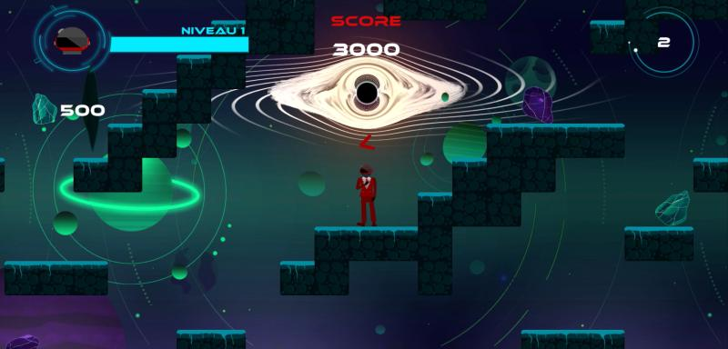

Mes Projets
Astrobeau
Jeu de plateforme mettant le joueur contre la montre alors que celui-ci fonce droit vers un trou noir. Utilise Unity et C#.
 Voir le projetUn jeu formidable (Le jeu)
Petit jeu de puzzle demandant au joueur de parcourir 3 salles distinctes. Développé avec Unity en C#.
 Voir le projet
Voir le projet